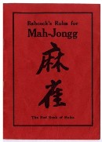

（３c）Joseph Park Babcock (ジョセフ パーク バブコック) .
|
麻雀牌の輸入などで、1920年代のアメリカ麻雀ブームを支えた。またアメリカで最初の本格的麻雀入門書「レッドブッック」の著者。
1893年、Indiana(インディアナ州）、Lafayette（ラファイエット）で生まれ、1911年、Purdue University（パデュー大学)の土木科を卒業。1912年、Standard Oil Company（スタンダード オイル カンパニー）に入社。やがて会社から上海に派遣され、そこで麻雀に出会った。
当時、上海租界の英米の社交界ではすでに麻雀が楽しまれていた。しかし教則本もなく、ルールや用語は曖昧なものであった。そこでバブコックは、1920年、簡単な麻雀入門書を作成した。そして1920年9月、本格的な麻雀入門書を刊行。装丁が赤色だったので、Red Book(レッドブック)と呼ばれた。

レッドブックに記述されたルールは、上海租界のThe American Club（米） やThe Union Club（英）で公式ルールとして採用された。
1922年、サンフランシスコの材木商、W. A. Hammond（W．A．.ハモンド）は、The Mah Jongg Sales Company（麻雀販売会社＝のちに「The Mah Jongg Sales Company of America」と改称）を設立、バブコックと協力して麻雀牌を大量にアメリカに輸入した。これにより、アメリカに麻雀ブームが起きた（1922年9月、W.A.ハモンドは、サンフランシスコ商工会議所に「1922年9月1日までに、上海からアメリカに輸出された麻雀牌合計56,000ドルのうち、彼の扱い分は50,000ドル」と報告している）。
また1923年、レッドブックは装いも新たにアメリカ麻雀販売会社からも刊行された。改訂版は縁取りが赤いだけであるが、いちおうレッドブック。日本で入手可能なのは（と言っても、まずムリだけど）、このタイプ。
当時、麻雀ブームにのってバブコック関係以外でも麻雀牌の輸入を手がける業者が多くいたが、この頃 アメリカに輸入された麻雀牌の数牌には すべて算用数字が刻印されていた。またゲームもMaｈ Jongg（マージャン）と呼称されていた。
そこでバブコックは、算用数字のインデックスは自分の考案、Maｈ Jonggという名称も自分が最初に使用したと主張した。これは牌種をアメリカ人に判別しやすくするためのインデックス入り牌を他が作ることが出来なくするためと、マージャンという名称を他に使用させないための主張である。
そこで他の輸入業者はマーチェク、ポンチョーなどの名称を使用した。しかし算用数字の刻印はバブコックが考案したと証明できなかったため、他でも使用され続けた。現在でも欧米圏で使用される牌には、数字等のインデックスが付されている。
1924年には、Robert F. FosterM.C.Work、Lee F.Hartman、J.H.Smith等とともに、American Mah Jong Law Committee（アメリカ マージャンルール委員会）を結成し、ルールの整備にも尽力した。
このようなバブコックの活躍が、マージャンが中国にとどまらない世界的ゲームの一つとして普及するきっかけとになった。1949年、56才にて死去。
|
My grandfather was the partner of Mr. Babcock
|
ちと調べたいことがあって、英語の麻雀HPをいろいろ見ていた。するとMy grandfather was the partner of Mr. Babcock（祖父はバブコック氏のパートナー）というHPが目に入った。
HPの管理人は Lisa Lethin（リサ レティン）という女性。彼女の祖父 Anton Nathaniel Lethin（アントン ナサニエル レティン 1887年8月〜1966年5月）氏がBabcockが設立したMah-Jongg Companyのパートナーだったという。
それだけのことなら「ふ〜ん」というだけの話。しかし石油会社の社員であったBabcockが、どうして麻雀を覚えたのか、またどうして麻雀牌の取引に携わるようになったのなどのエピソードにも触れられていた。
当該HPには当時の写真もたくさん掲載されており、興味深かった。詳しくはそのHPを見てもらうとして、概略だけ紹介する。
http://www.mahjongmuseum.nl/mahjong%20cafe/LethinUSA.html）
※もちろん該当ページは英語。概略紹介の翻訳が間違っていたとしても、σ(-_-)じゃなくて翻訳ソフトのせい....(>_<；
|
私（Lisa Lethin）の祖父 Anton N. Lethinは、1912年、法廷速記者としてフィリピンに赴きました。その後 国際通信教育学校のマニラ事務所（I..C.S）へ転職し、1915年 I.C.S.の上海事務所へ転勤しました。
1916 年11月、祖父は祖母と結婚しました。アメリカで式をあげて中国へ戻る途中、オレゴン州アシュランドで同じく新婚のBabcock夫妻と知り合いました。当時、バブコック氏はスタンダードオイル社の販売代理人でした。
ジョセフ.P.バブコックとノルマ嬢は中国で知り合い、日本で結婚式を挙げました。そして新婦を親戚に紹介するため、アメリカに戻っていたのです。以下は叔母が祖父母から聞いた話です
バブコック氏が揚子江のハウスボートに乗船していたとき、風雨のため 足止めされてしまいました。そのとき乗組員の中国人が未知のゲームで遊び始めました。バブコック氏は中国語が理解できたので、ゲームのルールを覚えました。
1919年の秋、バブコック氏は私の祖父母が蘇州で遊ぶのに苦労しているのを見て、その中国ゲームを欧米流に適応させて教えました。祖父の会社でのボス、Bert Hager（バート ヘイガー）にも教えました。そして二人（Bert と祖父）は上海で友人に教え、遊び始めました。そして３人は、そのゲームの商業的な可能性に気がつきました。
バブコック氏にはアイデアがあり、ヘイガー氏は資金を持っていました。私の祖父は２人を結びつけたのです。３人は中国でMah-Jongg社を設立し、共同経営者になりました。祖父は「Mah-Jonggという表現は自分の造語である」と常に言っていました。なぜなら中国語の“Ma-Ch'iao”（か何か...）の発音は、アメリカ人にはほとんど不可能だったからです。
そこで３人は中国人の店から麻雀牌を購入し始めました。しかし当時、多くの仕事は手工芸だったので、需要に追いつくことができませんでした。そこで私（Lisa）は1923または1924年に、３人が小さなMah-Jongg工場を始めたと思っています。しかし、その商標も結局は尽きてしまいました。そして誰も再開することはありませんでした。
我々は小さなMah-Jongg工場を管理している祖父の写真を持っていました。しかし写真は、いつか失われてしまいました。
|